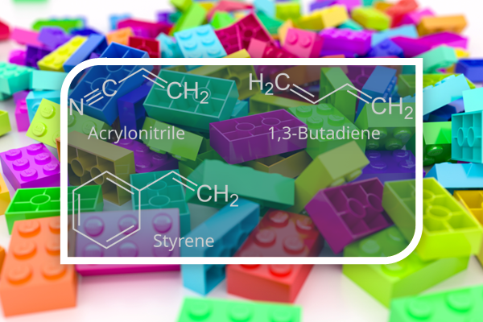

Module 5 Radical Copolymerization

1. Link to the simulator
2 Module objectives
- Given the reactivity ratio and the monomer feedstock fractions, predict which monomer is being consumed faster and what type of polymers (random, alternating, blocky, etc.) are being produced.
- Caculate F1 knowing f1 and predict if it is possible that f1 equals F1. If f1 equals F1, what is the value?
3. Classroom implementation ideas
Perform the following virtual experiments (f1 = 0.5 for all cases) and answer the questions for each simulation.
Experiments:
- MMA and Styrene (r1 = 0.46, r2 = 0.52)
- MA and MMA (r1 = 0.4, r2 = 2.2)
- MA and Styrene (r1 = 0.80, r2 = 0.19)
- Styrene and Maleic Anhydride (r1 = 0.05, r2 = 0.005)
- Acrylonitrile and Vinyl Acetate (r1 = 5.5, r2 = 0.06)
Questions:
- Select the correct answer(s).
- When the chain end is M1, it prefers to add to M1.
- When the chain end is M1, it prefers to add to M2.
- When the chain end is M2, it prefers to add to M1.
- When the chain end is M2, it prefers to add to M2.
- Select the correct answer.
- M1 is consumed faster.
- M2 is consumed faster.
- Both M1 and M2 are consumed at nearly the same rate.
- Polymers produced at the beginning are
- Both 1 and 2 block-wise
- Alternating
- Random
- A block of 1 and just one or two unit of 2 and a block of 1 and …
- A block of 2 and just one or two unit of 1 and a block of 2 and …
- Polymers produced at the beginning have
- Larger fraction of 1
- Larger fraction of 2
- Nearly the same fractions of 1 and 2
- What do you expect at the end of the polymerization
- Nearly the same as beginning
- Nearly just 1 left
- Nearly just 2 left
4. Example practice questions
In a copolymerization of monomers 1 and 2, initially present in the mole ratio 1:1, what is the composition of the copolymer formed initially, if r1 = 0.46 and r2 = 0.52?
A. F1 = 0.67
B. F1 = 0.49
C. F1 = 0.75
D. F1 = 0.25
E. F1 = 0.99Two monomers M1 and M2 have reactivity ratios r1 = 1 and r2 = 1. The structure of the polymer produced from an equimolar mixture of the two monomers will be close to:
A. -M1M2M1M2M1M2M1M2M1M2M1M2- (alternating)
B. -M1M1M1M1M1M1M2M2M2M2M2M2- (block)
C. -M1M2M1M1M1M2M2M1M2M2M1M2- (random)
D. -M1M1M1M1M1M1- and -M2M2M2M2M2M2- (homopolymers)Two monomers M1 and M2 have reactivity ratios r1 = 0.01 and r2 = 0.005. The structure of the polymer produced from an equimolar mixture of the two monomers will be close to:
A. -M1M2M1M2M1M2M1M2M1M2M1M2- (alternating)
B. -M1M1M1M1M1M1M2M2M2M2M2M2- (block)
C. -M1M2M1M1M1M2M2M1M2M2M1M2- (random)
D. -M1M1M1M1M1M1- and -M2M2M2M2M2M2- (homopolymers)For the copolymerization of monomer 1 with monomer 2, the reactivity ratios are r1 = 0.7, r2 = 0.3. At what mole fraction of monomer 1 in the feed will the composition of the copolymer exactly equal this feed composition?
A. 0.3
B. 0.5
C. 0.7
D. 0.8
E. 0.9
Copyright
Copyright(C) 2022 – 2024 Yu Wang

This webpage is licensed under a Creative Commons Attribution 4.0 International License.